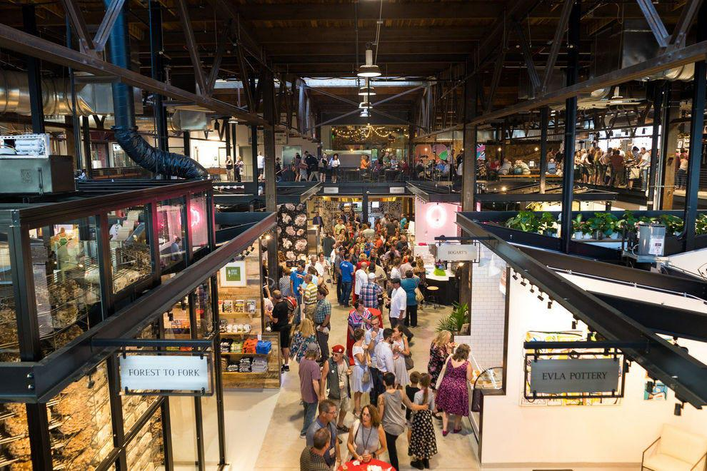
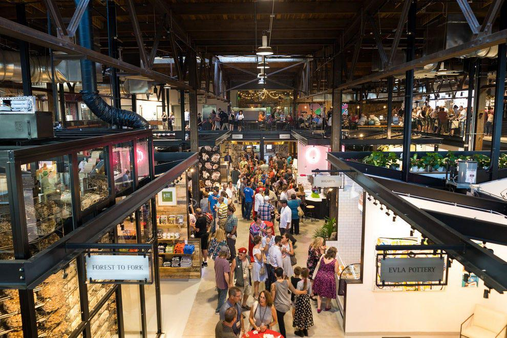

Hiprel Group Hiring– Fall26 PhD and Internship Opportunities
I’m excited to announce that our Hiprel Group is recruiting PhD students for Fall 2026 and internship students for all year round. We’re seeking passionate students who are eager to advance Neuro-Symbolic AI and apply it to improve software reliability.
Our research focuses on (but is not limited to):
- Combining Deep Learning with Automated Reasoning: We’re exploring how technologies like large language models (LLMs), Graph Neural Networks (GNNs), and reinforcement learning can enhance automated reasoning tools such as SAT/SMT solvers and model counters.
- Advancing Verifiable Code Generation: We are developing advanced neuro-symbolic AI approaches to generate verifiable code in systems such as Verus, Lean, and Dafny.
- Strengthening the Reasoning Capabilities of LLMs: We’re investigating ways to push the boundaries of what LLMs can achieve in terms of reasoning.
- Boosting the Reliability of ML Models and Frameworks: We're working on improving the robustness and reliability of machine learning frameworks like PyTorch through rigorous testing and verification techniques.
What We’re Looking For
If you're curious and driven, with a solid foundation in computer science and mathematics, and strong programming skills, I encourage you to apply.
Desired Skills:
- Research or internship experience in areas such as SAT/SMT solving or formal verification, or hands-on experience with automated reasoning tools such as Kissat, Z3, Verus, Dafny, Lean, Coq, or Alloy.
- If you do not have the above experience, that’s completely fine — strong C/C++ programming skills and a solid background in discrete mathematics are highly valued!
- If you lack the above experience, you should be highly motivated and eager to learn the relevant skills.
- Experience with large language models or graph neural networks is a plus.
How to Apply
Interested? Complete this Application Form to get started. We’ll review applications thoroughly and schedule interviews accordingly.
About UVA and its CS Department
The University of Virginia (UVA), founded by Thomas Jefferson in 1819, is one of the top public universities in the U.S., ranked 4th among public institutions and 24th overall in the 2025 US News rankings. According to CSRankings, UVA's Computer Science department is ranked in the top 9 in the nation for Software Engineering, Security, Formal Methods, and Artificial Intelligence. Our Hiprel Group thrives on interdisciplinary collaboration, offering rich resources and support to foster groundbreaking research.
Life in Charlottesville
Charlottesville, home to UVA, is a charming city known for its natural beauty and rich cultural history. Nestled in the Blue Ridge Mountains, it’s a perfect place for anyone seeking a balance between academic life and outdoor adventures. The city is also steeped in history, with landmarks like Thomas Jefferson’s Monticello, and it’s just a two-hour drive from Washington D.C., providing access to a wealth of opportunities beyond the campus.
We’re looking forward to working with driven, passionate students who are ready to tackle exciting research challenges. I hope to see you join our Hiprel Group and help push the boundaries of what’s possible!


 
